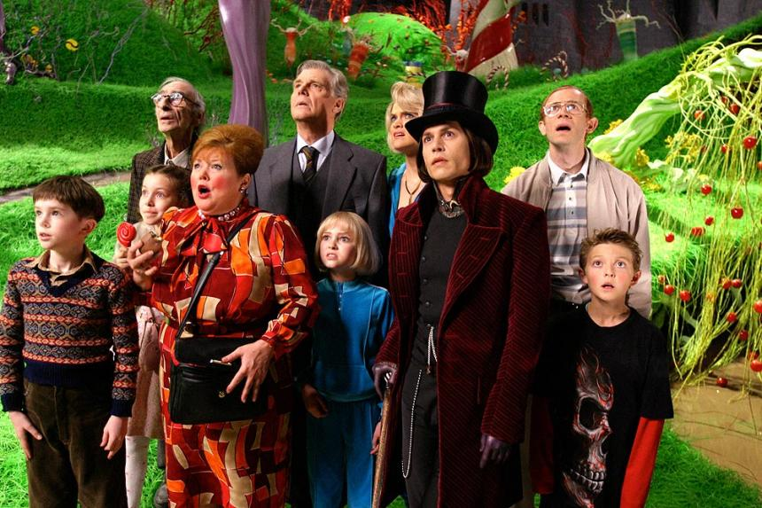

찰리와 초콜릿 공장
- 소개
- 줄거리
- 등장인물
줄거리

신비한 수수께끼를 간직한 웡카의 초콜릿 공장
전 세계 누구에게나 사랑 받는 세계 최고의 초콜릿 공장인 ‘윌리 웡카 초콜릿 공장’.
매일 엄청난 양의 초콜릿을 생산해 세계 각국으로 운반하고 있지만 그 누구도 공장을 드나 드는 사람을 본 적이 없는 비밀의 공간이다.
공장보다 더 신비로운 수수께끼는 초콜릿 공장의 공장장인 윌리 웡카(조니 뎁)라는 인물.
들리는 소문에 의하면 웡카는 몇 년 동안 공장 밖으로 나가본 적도 없다고 한다. 그가 어떤 사람이고, 왜 초콜릿 만드는 일에 모든 것을 걸고 있는지 모두들 궁금해 할 뿐이다.
어느 날, 윌리 웡카가 5개의 웡카 초콜릿에 감춰진 행운의 '황금티켓'을 찾은 어린이 다섯 명에게 자신의 공장을 공개하고 그 모든 제작과정의 비밀을 보여주겠다는 선언을 한다.
이제 전 세계 어린이들은 황금티켓을 찾기 위한 노력을 시작한다.
윌리 웡카의 황금티켓을 찾아라
엄마, 아빠, 할머니, 할아버지들과 함께 초콜릿 공장 바로 옆, 다 쓰러져 갈듯한 작은 오두막집에서 살고 있는 찰리(프레디 하이모어) 역시 초콜릿 공장에 가고 싶은 건 마찬가지.
찰리는 매일 밤 잠들기 전 공장 안이 어떻게 생겼을 지를 상상하며 잠이 들곤 했다.
하지만 찰리는 1년에 단 한번, 자신의 생일에 딱 한 개의 웡카 초콜릿을 먹을 수 있기 때문에 당첨될 확률은 거의 희박했다.
한편, 세계 각국에서 행운의 당첨자들이 속속 나타나기 시작했다.
첫 번째 당첨자는 독일의 먹보 소년 아우구스투스. 언제나 초콜릿을 입에 달고 사는 소년이다. 두 번째 행운은 뭐든지 원하는 건 손에 넣어야 직성이 풀리는 부잣집 딸 버루카에게, 세 번째는 껌 씹기 대회 챔피언인 바이올렛에게 돌아간다. 네 번째 주인공인 마이크는 자신이 얼마나 똑똑한지를 세상에 과시하기 위해 도전에 응해 목적을 달성한 집념의 소유자다.
그리고 마지막!! 눈 쌓인 거리에서 우연히 돈을 주워 웡카 초콜릿을 산 찰리가 다섯 번째 황금 티켓을 발견한 주인공이 되었다!!
초콜릿 강이 흐르고 사탕이 익어가는 세상에서 가장 달콤한 환상의 세계
웡카의 초콜릿 공장에 들어간 찰리는 눈앞에 펼쳐지는 놀라운 광경들에 입을 다물지 못한다.
한쪽엔 초콜릿 폭포가 흐르고 그 옆에선 쾌활한 움파 룸파 족들이 거대한 초콜릿 과자 산에 삽질을 하거나, 용머리 모양을 한 설탕 보트를 타고 초콜릿 강을 건너간다. 초콜릿 강가에는 꽈배기 사탕이 열리는 나무와 민트 설탕 풀이 자라고 있고 덤불 속에선 머쉬멜로우 체리크림이 익어간다.
한편, 찰리를 제외한 다른 네 명은 웡카의 놀라운 발명품들에는 관심도 없고 한결같이 욕심과 이기심, 승부욕과 과시욕에 눈이 멀어 자꾸만 문제를 일으키는데…